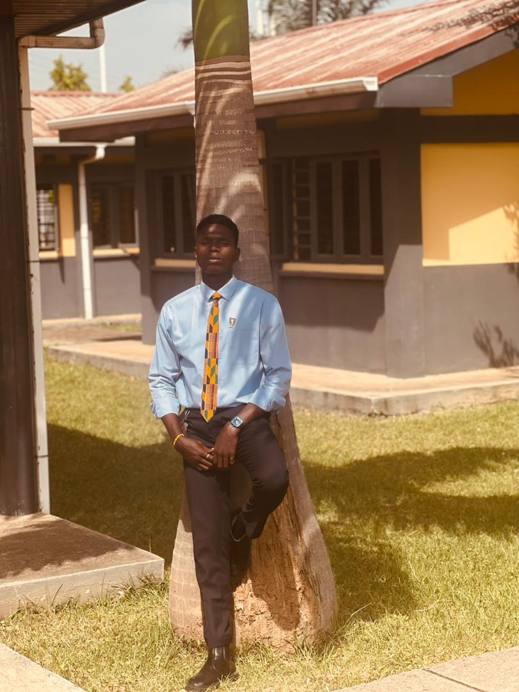

Shadrack Erhiaganoma Ekavana | WDD 130
Hello My Name is Shadrack Erhiaganoma Ekavana and i am from nigeria Delta State Currently Living in Abuja
Nigeria, i Enjoy Photography, Video Games and Playing Soccer.
i am Currently Studying Web Design and
Development at BYU-IDAHO.
I am excited to learn more about web development and design. I am Looking
forward
to creating my own Website and Learning more about the industry and how it operates.I am excited to see
what the future holds for me.